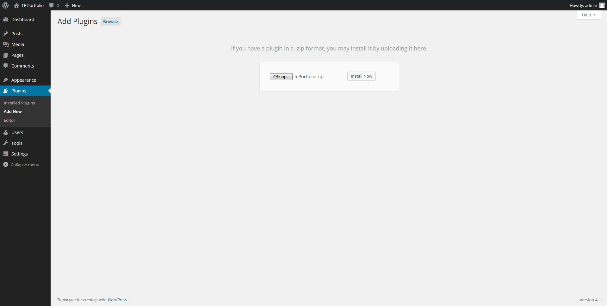
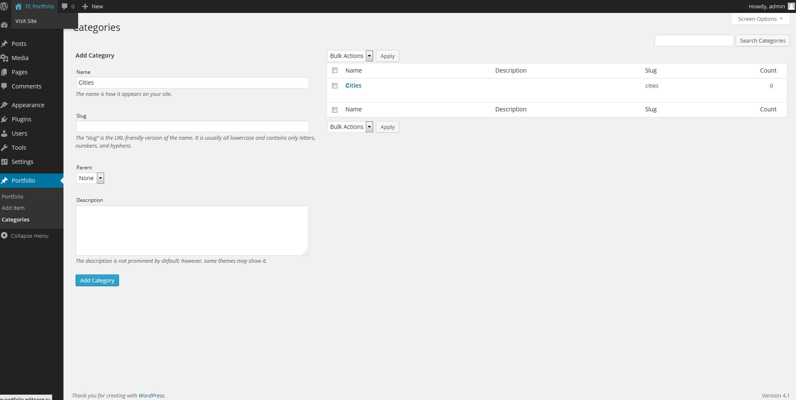
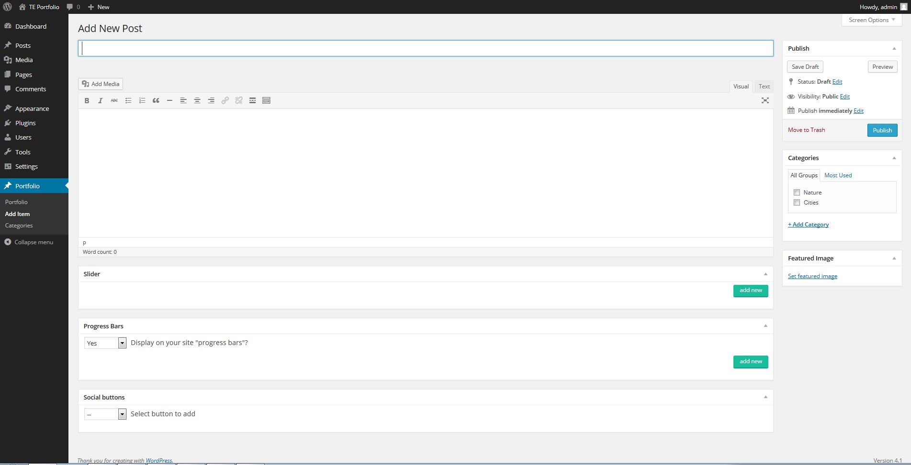
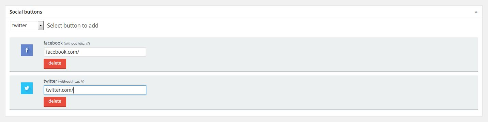
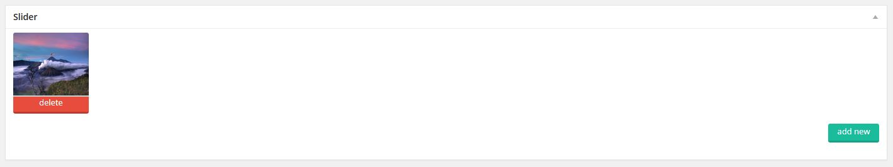
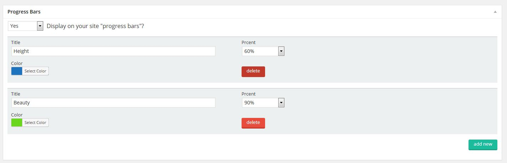
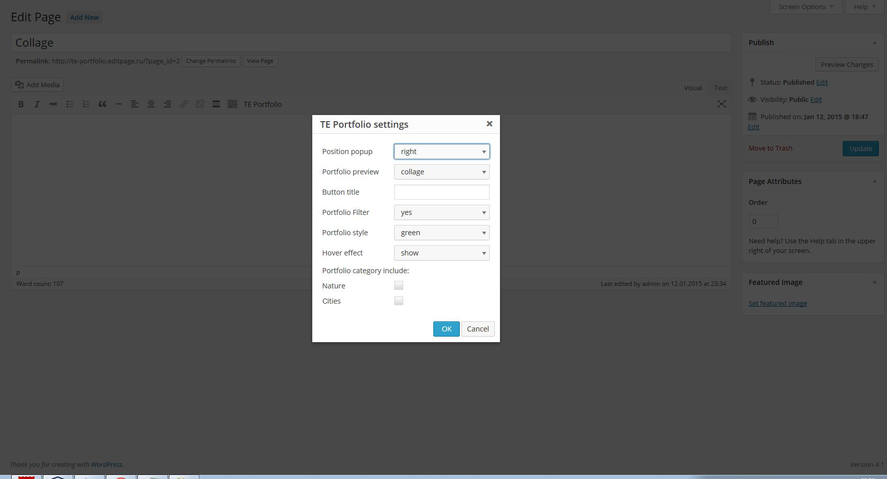

Thank you for purchasing this plugin! Should you have any questions concerning installation, setting or operation of the plugin, you're always welcome to ask me for help and send me a message to onlajn@bk.ru.
Kind regards, TrubinE
tePortfolio plugin will help to create a full-fledged portfolio on the site even for those people who have no programming skills. The plugin is written in such a way that you do not have to dig in a code, and its interface is simple enough even for a novice user of Word Press.
TePortfolio will perfectly fit the sites of various themes. The plugin can be used for sites about equipment and gadgets. It will perfectly fit for display of company’s employees or for a travel blog for demonstration of amazing sights of our planet.
Convenient functional allows to post works’ portfolio on your site in just a few minutes and with numerous management possibilities:
Upon purchase of the plugin you'll get its files in .zip archive.
Login on your site as administrator in order to install the plugin. Then follow the path «Plugins» -> «Add New». Click «Upload» in menu and select tePortfolio.zip. Click «Install Now» and then «Activate Plugin»
The plugin is activated. Now let's add categories for our future portfolio.
Select «Portfolio»-> «Categories». For adding a new category you should simply fill «Name» field and press «Add Category».
The portfolio filter will work according to these categories.
In order to add a new work to the portfolio you should select «Portfolio»-> «Add Item».
You can completely format portfolio's new work on this page.
Firstly fill in «Enter title here» field - this heading will be displayed on pop-up window with detailed information about the work.
Then fill in the content's text field. You can use everything you want in it (image tags, tables, video etc.). This content will be displayed in pop-up window.
Check the necessary category on the right of «Categories» block. The portfolio filter will work according to these categories.
Add a miniature which will serve as a preview for your portfolio in "Featured Image" block, below «Categories».
There is «Social buttons» block, under the text editor. Using this block you can add buttons of social networks. Select the necessary button from (Select button to add) list. The new block with a button will be added below. Type the address where this button will be added to in a text field. The added block can be deleted by pressing «Delete» button. The buttons of social networks are displayed in the pop-up window.
«Slider» block which allows to add a slideshow to your work is located below «Social buttons» block. In order to add a new slide (image) to the slideshow press «Add new» button. Standard Wordpress loader will appear. Using this loader you can upload a new image or select the image from already uploaded pictures. Click «Add». A miniature of your image will appear in «Slider» block. Press «Delete» button located under each miniature in order to delete the image from the slideshow. This content will be displayed in the pop-up window.
A progress bar will make your presentation more impressive and colourful. The block of bar settings is located below «Slider» block, and is called «Progress Bars». Select «yes» in «Display on your site» progress bars »?» list in order to display the bar on the site. Press «Add new» in order to add a new bar. A new block appears, where «Title» field is a progress bar heading, «Color» is a bar colour, «Percent» is the quantity of percents for bar filling. Press «Add new» to add a new bar, press «Delete» to delete the bar. This content will be displayed in the pop-up window.
The work in our portfolio is done. Now don't forget to press "Update" in order to save changes.
In order to edit the works follow the path «Portfolio»-> «Portfolio». Select the necessary work for editing, point at it, and press «Edit». Then follow the instruction from the Step 1.
In order to add the portfolio on a page select "Pages"-> "Add new" or select already created page and open it in editing mode.
There is «TE Portfolio» button on «Visual» tab, in the editor of the main content.
Put the pointer in a place of editor’s text field where you want your portfolio to be displayed, and press «TE Portfolio» button.
Pop-up window with portfolio settings appears. The portfolio display can be set here.
Once you filled all setting, press «Оk». Short-code which can be used on other pages of your site appears in the text block.
Just press "Publish". Now your site has an excellent tePortfolio!
{kind=link}
{kind=link}
{kind=link}
{kind=link}
{kind=link}
{kind=link}
{kind=link}